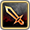
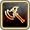

技能搜尋
隊長技/專武搜尋
啦啦隊搜尋
普池收集檢查
親愛度文本
最佳經驗隊
最佳複製隊
重置所有篩選
屬性篩選:
火
水
樹
光
闇
武器篩選:

劍

斧
槍
本
短劍
杖
弓
特殊
角色分類:
普池角
菓子角(不入池)
一般限定角
合作角
活動角
未分類/3-4星
固有技種類:
橘
藍
紫
粉
綠
拆技格子：
橘色技能
橘技1
橘技2以上
藍色技能
藍技1
藍技2以上
紫色技能
紫技1
紫技2以上
粉色技能
粉技1
粉技2以上
SS 綠技 (被動)
SS綠技1
SS綠技2
SS綠技3+
S3 綠技 (被動)
S3綠技1
S3綠技2
S3綠技3+
專武永續昇華 (降血殺輔助):
無篩選
有
隊長技昇華:
無篩選
全覺醒(開場)
超覺醒(每回)
排序:
預設
HP降順
DEF降順
角色名
屬性
武器
HP
DEF
固有
slot1
slot2
slot3
永續昇華